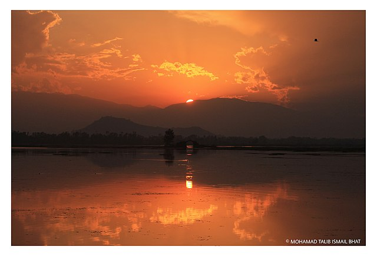
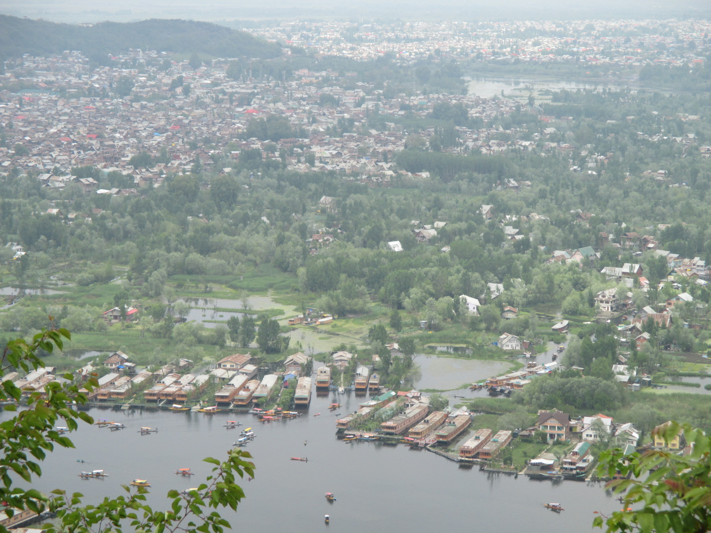

Topography
The lake is located within a catchment area covering 316 square kilometres (122 sq mi) in the Zabarwan mountain valley, in the foothills of the Shankaracharya Hill, which surrounds it on three sides. The lake, which lies to the east and north of Srinagar city covers an area of 18 square kilometres (6.9 sq mi), although including the floating gardens of lotus blooms, it is 21.2 square kilometres (8.2 sq mi) (an estimated figure of 22–24 square kilometres (8.5–9.3 sq mi) is also mentioned). The main basin draining the lake is a complex of five interconnected basins with causeways; the Nehru Park basin, the Nishat basin, the Hazratbal basin, the Nigeen basin and the Barari Nambal basin. Navigational channels provide the transportation links to all the five basins.
Geology

The average elevation of the lake is 1,583 metres (5,194 ft). The depth of water varies from 6 metres (20 ft) at its deepest in Nigeen lake to 2.5 metres (8.2 ft), the shallowest at Gagribal. The depth ratio between the maximum and minimum depths varies with the season between 0.29 and 0.25, which is interpreted as flat bed slope.The length of the lake is 7.44 kilometres (4.62 mi) with a width of 3.5 kilometres (2.2 mi).The lake has a basin having shore length of 15.5 kilometres (9.6 mi) and roads run all along the periphery. Irreversible changes through urban developments have placed further restrictions on the flow of the lake and as a result, marshy lands have emerged on the peripheral zones, notably in the foothill areas of the Shankaracharya and Zaharbwan hills. These marshy lands have since been reclaimed and converted into large residential complexes.
Hydrology
The shallow, open-drainage lake is fed by Dachigam-Telbal Nallah (with perennial flow), Dara Nallah ('Nallah' means "stream") and many other small streams. The lake is classified as 'warm monomictic' under the sub-tropical lake category. Spring sources also contribute to the flow, although no specific data is available to quantify their contribution. To address this, water balance studies to analyse and assess the characteristics of flow have been conducted in order to approximate the discharge contributed by the springs in the lake bed. The complex land use pattern of the valley is reflected in the urbanised Srinagar in its north, with rice fields, orchards and gardens in the lower slopes, and barren hills beyond steep sloping hills. The flat topography also affects drainage conditions. It receives an average annual rainfall of 655 millimetres (25.8 in) in the catchment, but during the summer, snow melt from the higher ranges of the catchment results in large inflows into the lake.The maximum flood discharge of Telbal Nallah has been assessed as 141.5 metres3/s for a one in hundred return period; the 1973 observed flood in Telbal Nallah has been estimated as 113 metres3/s. The average annual flow, according to discharge measurements, has been estimated as 291.9 million cubic metres, with Telbal Nalah accounting for 80% of the total and 20% contributed by other sources. The silt load has been estimated at 80,000 tonnes per year with 70% contribution from the Telabal Nallah, with 36,000 tonnes recorded as settling in the lake. There are two outlets from the lake, namely the Dalgate and Amir Khan Nallah that connects the lakes of Nigeen and Anchar Lake. Dalgate is controlled by a weir and lock system. The outflow from these two outlets has been estimated as 275.6 million cubic metres.